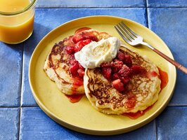

Cheesecake Pancakes

Description:
Cheesecake pancakes are a delightful fusion of two beloved breakfast classics, seamlessly blending the rich, creamy indulgence of a cheesecake with the comforting warmth of fluffy pancakes. These delectable treats elevate the traditional pancake experience to a whole new level of decadence and flavor. The pancake batter is infused with the luscious essence of cream cheese, imparting a velvety texture and a subtle tangy undertone that perfectly complements the sweetness of the pancake itself. Each bite offers a harmonious marriage of textures — the soft and airy pancake layers interwoven with pockets of creamy cheesecake goodness. The edges of the pancakes delicately caramelize, creating a tantalizing contrast to the smooth, melt-in-your-mouth center. To enhance the overall experience, a drizzle of velvety maple syrup or a sprinkle of powdered sugar can be added, intensifying the sweetness and adding a touch of elegance.
Cheesecake pancakes are not just a breakfast indulgence; they also make for a sumptuous brunch or a delightful dessert option. Whether enjoyed as a special weekend treat or a celebratory morning feast, these pancakes redefine the boundaries of traditional breakfast fare, turning an ordinary meal into a memorable culinary experience that satisfies both the sweet tooth and the pancake enthusiast in every bite.
Ingredients:
- 8 Oz. Fresh Strawberries (Hulled & Chopped)
- 3/4 Cup Strawberry Jam
- 5 Tbsp. White Sugar (Divided)
- 2 Tsp. Milk
- 1/4 Tsp. Vanilla Extract
- 1 3/4 Cups All Purpose Flour
- 2 Tsp. Baking Powder
- 1/2 Tsp. Baking Soda
- 1/4 Tsp. Salt
- 1 Large Egg (Lightly Beaten)
- 1 1/2 Cups Buttermilk
- 3 Tbsp. Vegetable Oil
- Cooking Spray
- Topping of Choice (Graham Crackers, Powdered Sugar, Maple Syrup, etc.)
Steps:
- Gather all ingredients.
- For the topping: Combine strawberries and jam in a small saucepan. Bring to a simmer. Let it cool. Set aside.
- For the cream cheese mixture: In a small bowl, combine cream cheese, three (3) tablespoons of sugar, milk, and vanilla. Beat with an electric mixer until smooth. Transfer this mixture to a pastry bag or a resealable plastic bag with a corner snipped off. Set aside.
- For the pancake batter: Combine flour, remaining two (2) tablespoons of sugar, baking powder, baking soda, and salt in a large bowl. In a separate medium bowl, combine the egg, buttermilk, and oil. Add this egg mixture to the flour mixture and stir just until moistened (batter should be slightly lumpy).
- Once complete, heat an extra-large nonstick skillet or griddle over medium heat. Coat with cooking spray. Pour 1/3 cup portions of the pancake batter onto the skillet. Reduce heat to medium-low.
- Cook until bottoms are golden brown, edges are slightly dry, and bubbles form at the edges of the pancakes (approximately 2-3 minutes).
- Pipe a swirl of cream cheese mixture from the bag onto each pancake starting from the center.
- Coat the uncooked side of the pancakes with cooking spray. Turn and cook for 2-3 minutes on the other side as well. Repeat with the remaining batter and cream cheese mixture.
- Serve with the strawberry topping on top and sprinkle with your topping of choice.
- Enjoy!